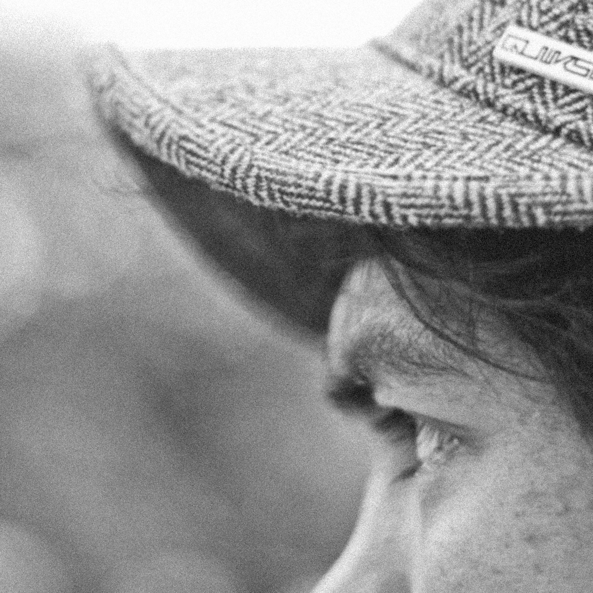

Resha Juhari is a dedicated freelance Indonesian photojournalist with a specialty in editorial coverage and reportage. His career began in 2012 in the local newspaper, while Resha started doing photography in 2012 due to his huge passion for storytelling through the lens. He boldly decided to become a freelancer early in 2021 so as to attain creative freedom to deal with the issues that most speak to his humanity.
Resha’s photographic focus is on social issues, cultural narratives, conservation efforts, and environmental concerns. He has the tendency to provide the viewer with a glimpse of essence regarding these subjects—telling a visual story beyond words.
His work is well featured in leading publications. His photographs can be seen in The Guardian, on the BBC and Xinhua, among many more leading media outlets globally. His contributions to We Animals Media, Origo Hungarian, Der Standard, Die Presse German, Astra International, and Traveloka simply speak to the universal appeal of visual storytelling.
For all collaborations please contact: reshajr@gmail.com
Resha’s photographic focus is on social issues, cultural narratives, conservation efforts, and environmental concerns. He has the tendency to provide the viewer with a glimpse of essence regarding these subjects—telling a visual story beyond words.
His work is well featured in leading publications. His photographs can be seen in The Guardian, on the BBC and Xinhua, among many more leading media outlets globally. His contributions to We Animals Media, Origo Hungarian, Der Standard, Die Presse German, Astra International, and Traveloka simply speak to the universal appeal of visual storytelling.
For all collaborations please contact: reshajr@gmail.com